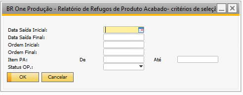
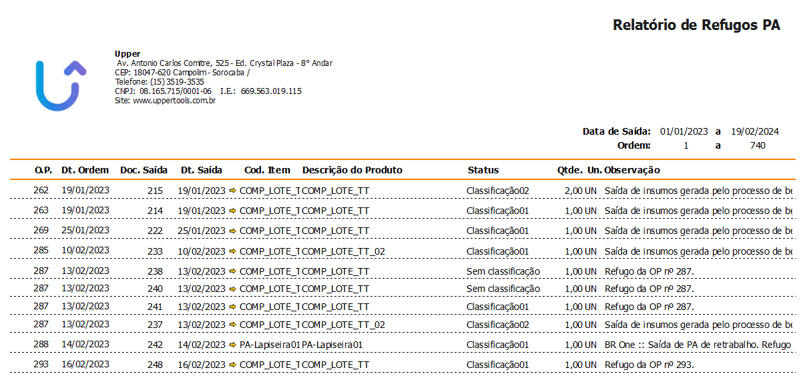

Relatório de Refugos de Produtos Acabado
Este relatório retorna uma lista dos PAs refugados nas OPs, o retorno é realizado de acordo com os filtros selecionados.
Data Saída Inicial: Define data de início de busca.
Data Saída Final: Define data final de busca.
Ordem Inicial: Define OP inicial de busca.
Ordem Final: Define OP final de busca.
Item PA: Define um range de PA para retorno.
Status OP: Define qual o status da OP.
Exemplo de retorno de relatório:
